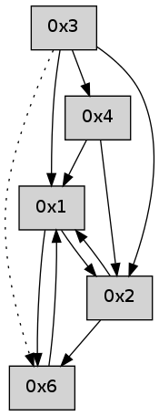

>> << IDX [start] -100 -25 -5 +0 +5 +25 +100 [370.214980125]
 Previous packets
----------------------------------------------------------------------
365.293898 beacon01(adaf) #0 coord=01,02,05,03,04,06 cycle=432.0ms assoc
-- color-indic=0 64 bd b6
365.303858 beacon02(adaf) #0 coord=01,02,05,03,04,06 cycle=432.0ms assoc 64 ec 49
365.313859 beacon05(adaf) #0 coord=01,02,05,03,04,06 cycle=432.0ms assoc 64 4a 63
365.323859 beacon03(adaf) #0 coord=01,02,05,03,04,06 cycle=432.0ms assoc 64 d6 47
365.333859 beacon04(adaf) #0 coord=01,02,05,03,04,06 cycle=432.0ms assoc 64 70 6d
365.343860 beacon06(adaf) #0 coord=01,02,05,03,04,06 cycle=432.0ms assoc 64 04 71
365.355504 [Hello(4): seq=162 sym=3,1,2 sysInfo= stat=3:3,0,0,0/1:5,0,0,0/2:11,0,0,0]
365.357953 [Hello(1): seq=61 sym=6,2,3 sysInfo= stat=6:4,0,0,0/2:11,0,0,0/3:1,0,0,0]
----------------------------------------------------------------------
365.786005 beacon01(adaf) #0 coord=01,02,05,03,04,06 cycle=432.0ms assoc
-- color-indic=0 64 79 d9
365.795967 beacon02(adaf) #0 coord=01,02,05,03,04,06 cycle=432.0ms assoc 64 28 26
365.805966 beacon05(adaf) #0 coord=01,02,05,03,04,06 cycle=432.0ms assoc 64 8e 0c
365.815967 beacon03(adaf) #0 coord=01,02,05,03,04,06 cycle=432.0ms assoc 64 12 28
365.825967 beacon04(adaf) #0 coord=01,02,05,03,04,06 cycle=432.0ms assoc 64 b4 02
365.835967 beacon06(adaf) #0 coord=01,02,05,03,04,06 cycle=432.0ms assoc 64 c0 1e
365.847651 [Hello(2): seq=660 sym=6,3,1 sysInfo= stat=6:12,0,0,0/3:3,0,0,0/1:6,0,0,0]
----------------------------------------------------------------------
366.278114 beacon01(adaf) #0 coord=01,02,05,03,04,06 cycle=432.0ms assoc
-- color-indic=0 64 34 de
366.288075 beacon02(adaf) #0 coord=01,02,05,03,04,06 cycle=432.0ms assoc 64 65 21
366.298075 beacon05(adaf) #0 coord=01,02,05,03,04,06 cycle=432.0ms assoc 64 c3 0b
366.308076 beacon03(adaf) #0 coord=01,02,05,03,04,06 cycle=432.0ms assoc 64 5f 2f
366.318077 beacon04(adaf) #0 coord=01,02,05,03,04,06 cycle=432.0ms assoc 64 f9 05
366.328075 beacon06(adaf) #0 coord=01,02,05,03,04,06 cycle=432.0ms assoc 64 8d 19
366.338870 [Hello(1): seq=62 sym=6,2,3 sysInfo= stat=6:4,0,0,0/2:12,0,0,0/3:1,0,0,0]
366.343414 [Hello(4): seq=163 sym=3,1,2 sysInfo= stat=3:3,0,0,0/1:6,0,0,0/2:12,0,0,0]
----------------------------------------------------------------------
366.770221 beacon01(adaf) #0 coord=01,02,05,03,04,06 cycle=432.0ms assoc
-- color-indic=0 64 f0 b1
366.780182 beacon02(adaf) #0 coord=01,02,05,03,04,06 cycle=432.0ms assoc 64 a1 4e
366.790183 beacon05(adaf) #0 coord=01,02,05,03,04,06 cycle=432.0ms assoc 64 07 64
366.800182 beacon03(adaf) #0 coord=01,02,05,03,04,06 cycle=432.0ms assoc 64 9b 40
366.810183 beacon04(adaf) #0 coord=01,02,05,03,04,06 cycle=432.0ms assoc 64 3d 6a
366.820184 beacon06(adaf) #0 coord=01,02,05,03,04,06 cycle=432.0ms assoc 64 49 76
366.831843 [Hello(2): seq=661 sym=6,3,1 sysInfo= stat=6:12,0,0,0/3:3,0,0,0/1:7,0,0,0]
----------------------------------------------------------------------
367.262329 beacon01(adaf) #0 coord=01,02,05,03,04,06 cycle=432.0ms assoc
-- color-indic=0 64 bc 01
367.272290 beacon02(adaf) #0 coord=01,02,05,03,04,06 cycle=432.0ms assoc 64 ed fe
367.282290 beacon05(adaf) #0 coord=01,02,05,03,04,06 cycle=432.0ms assoc 64 4b d4
367.292290 beacon03(adaf) #0 coord=01,02,05,03,04,06 cycle=432.0ms assoc 64 d7 f0
367.302290 beacon04(adaf) #0 coord=01,02,05,03,04,06 cycle=432.0ms assoc 64 71 da
367.312291 beacon06(adaf) #0 coord=01,02,05,03,04,06 cycle=432.0ms assoc 64 05 c6
367.323964 [Hello(4): seq=164 sym=3,1,2 sysInfo= stat=3:3,0,0,0/1:6,0,0,0/2:13,0,0,0]
367.325761 [Hello(1): seq=63 sym=6,2,3 sysInfo= stat=6:5,0,0,0/2:13,0,0,0/3:1,0,0,0]
----------------------------------------------------------------------
367.754436 beacon01(adaf) #0 coord=01,02,05,03,04,06 cycle=432.0ms assoc
-- color-indic=0 64 78 6e
367.764397 beacon02(adaf) #0 coord=01,02,05,03,04,06 cycle=432.0ms assoc 64 29 91
367.774397 beacon05(adaf) #0 coord=01,02,05,03,04,06 cycle=432.0ms assoc 64 8f bb
367.784397 beacon03(adaf) #0 coord=01,02,05,03,04,06 cycle=432.0ms assoc 64 13 9f
367.794397 beacon04(adaf) #0 coord=01,02,05,03,04,06 cycle=432.0ms assoc 64 b5 b5
367.804398 beacon06(adaf) #0 coord=01,02,05,03,04,06 cycle=432.0ms assoc 64 c1 a9
367.816068 [Hello(2): seq=662 sym=6,3,1 sysInfo= stat=6:13,0,0,0/3:3,0,0,0/1:8,0,0,0]
----------------------------------------------------------------------
368.246545 beacon01(adaf) #0 coord=01,02,05,03,04,06 cycle=432.0ms assoc
-- color-indic=0 64 26 0f
368.256505 beacon02(adaf) #0 coord=01,02,05,03,04,06 cycle=432.0ms assoc 64 77 f0
368.266506 beacon05(adaf) #0 coord=01,02,05,03,04,06 cycle=432.0ms assoc 64 d1 da
368.276506 beacon03(adaf) #0 coord=01,02,05,03,04,06 cycle=432.0ms assoc 64 4d fe
368.286507 beacon04(adaf) #0 coord=01,02,05,03,04,06 cycle=432.0ms assoc 64 eb d4
368.296507 beacon06(adaf) #0 coord=01,02,05,03,04,06 cycle=432.0ms assoc 64 9f c8
368.307608 [Hello(1): seq=64 sym=6,2,3 sysInfo= stat=6:5,0,0,0/2:14,0,0,0/3:1,0,0,0]
368.311826 [Hello(4): seq=165 sym=3,1,2 sysInfo= stat=3:3,0,0,0/1:7,0,0,0/2:14,0,0,0]
----------------------------------------------------------------------
368.738653 beacon01(adaf) #0 coord=01,02,05,03,04,06 cycle=432.0ms assoc
-- color-indic=0 64 e2 60
368.748614 beacon02(adaf) #0 coord=01,02,05,03,04,06 cycle=432.0ms assoc 64 b3 9f
368.758615 beacon05(adaf) #0 coord=01,02,05,03,04,06 cycle=432.0ms assoc 64 15 b5
368.768615 beacon03(adaf) #0 coord=01,02,05,03,04,06 cycle=432.0ms assoc 64 89 91
368.778615 beacon04(adaf) #0 coord=01,02,05,03,04,06 cycle=432.0ms assoc 64 2f bb
368.788616 beacon06(adaf) #0 coord=01,02,05,03,04,06 cycle=432.0ms assoc 64 5b a7
368.800303 [Hello(2): seq=663 sym=6,1 sysInfo= stat=6:13,0,0,0/1:9,0,0,0]
----------------------------------------------------------------------
369.230761 beacon01(adaf) #0 coord=01,02,05,03,04,06 cycle=432.0ms assoc
-- color-indic=0 64 ae d0
369.240722 beacon02(adaf) #0 coord=01,02,05,03,04,06 cycle=432.0ms assoc 64 ff 2f
369.250721 beacon05(adaf) #0 coord=01,02,05,03,04,06 cycle=432.0ms assoc 64 59 05
369.260724 beacon03(adaf) #0 coord=01,02,05,03,04,06 cycle=432.0ms assoc 64 c5 21
369.270722 beacon04(adaf) #0 coord=01,02,05,03,04,06 cycle=432.0ms assoc 64 63 0b
369.280723 beacon06(adaf) #0 coord=01,02,05,03,04,06 cycle=432.0ms assoc 64 17 17
369.292394 [Hello(4): seq=166 sym=1,2 sysInfo= stat=1:7,0,0,0/2:15,0,0,0]
369.295501 [Hello(1): seq=65 sym=6,2 sysInfo= stat=6:6,0,0,0/2:15,0,0,0]
----------------------------------------------------------------------
369.722870 beacon01(adaf) #0 coord=01,02,05,03,04,06 cycle=432.0ms assoc
-- color-indic=0 64 6a bf
369.732831 beacon02(adaf) #0 coord=01,02,05,03,04,06 cycle=432.0ms assoc 64 3b 40
369.742831 beacon05(adaf) #0 coord=01,02,05,03,04,06 cycle=432.0ms assoc 64 9d 6a
369.752831 beacon03(adaf) #0 coord=01,02,05,03,04,06 cycle=432.0ms assoc 64 01 4e
369.762834 beacon04(adaf) #0 coord=01,02,05,03,04,06 cycle=432.0ms assoc 64 a7 64
369.772833 beacon06(adaf) #0 coord=01,02,05,03,04,06 cycle=432.0ms assoc 64 d3 78
369.784496 [Hello(2): seq=664 sym=6,1 sysInfo= stat=6:13,0,0,0/1:10,0,0,0]